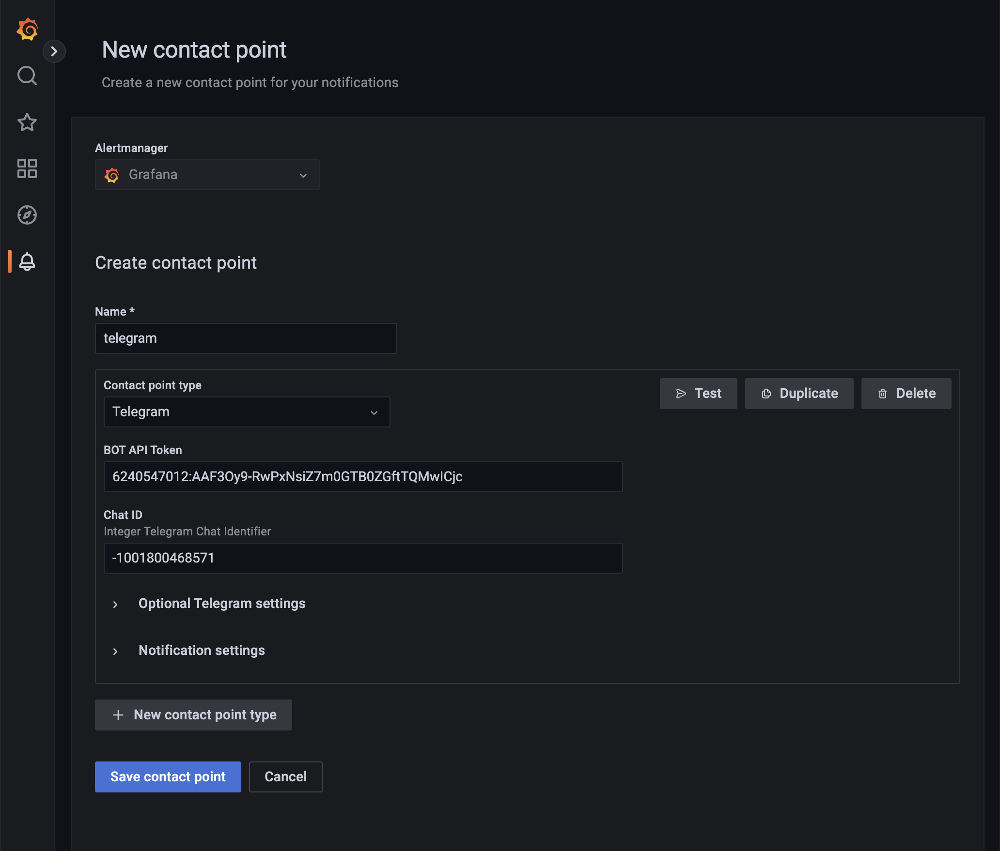
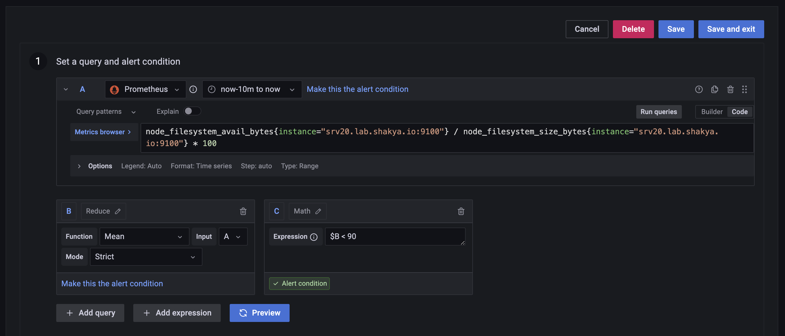
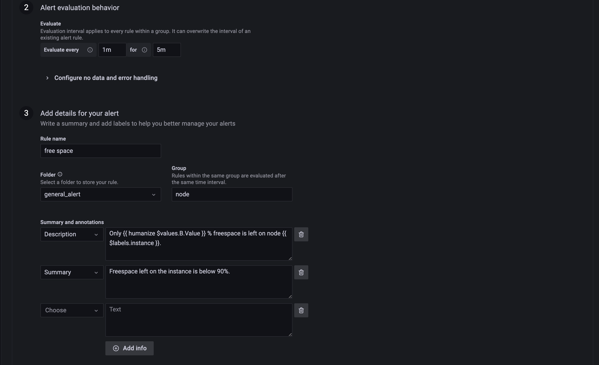
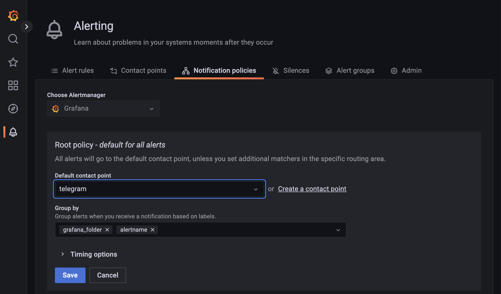

A chatbot is an automated multifunctional assistant, that can receive send and send triggered messages, and with SendPulse, your bot can save information as variables for future usage.
Follow the step-by-step instruction to create your first chatbot for Telegram messenger or connect an existing one to SendPulse for further configuration.
If you already have a bot, skip the first paragraph and take a look at the next section.
Open Telegram messenger, sign in to your account or create a new one.
Step 1. Enter @Botfather in the search tab and choose this bot.
Official Telegram bots have a blue checkmark beside their name.
Click “Start” to activate BotFather bot.

In response, you receive a list of commands to manage bots.
Step 2. Choose or type the /newbot command and send it.

Step 3. Choose a name for your bot — your subscribers will see it in the conversation. And choose a username for your bot — the bot can be found by its username in searches. The username must be unique and end with the word “bot.”

After you choose a suitable name for your bot — the bot is created. You will receive a message with a link to your bot t.me/<bot_username>, recommendations to set up a profile picture, description, and a list of commands to manage your new bot.
To connect a bot to SendPulse you need a token. Copy your token value and find more information about connecting your bot to SendPulse in the last section of this article.

Step 1. Go to the @BotFather bot and send the command /token.

You will see buttons with any bots that you have created.
Step 2. Choose the one you need a token for so you can connect it with Sendpulse.

Copy the token value.

https://api.telegram.org/bot<YOUR API TOKE FROM ABOVE>/getUpdates
{"ok":true,"result":[{"update_id":1112223334445,
"channel_post":{"message_id":1,"chat":{"id":-<YOUR_CHAT_ID>,"title":"MyINNOG6Monitoring","type":"channel"},"date":1576534122,"text":"/bot","entities":[{"offset":0,"length":4,"type":"bot_command"}]}}]}

Enter a PromQL query... typenode_filesystem_avail_bytes{instance="srvX.lab.shakya.io:9100"} / node_filesystem_size_bytes{instance="srvX.lab.shakya.io:9100"} * 100
Math$B < 90

Add details for your alert sectionfree spacegeneral_alert and press enternodeFreespace left on the instance is below 90%.Only {{ humanize $values.B.Value }} % freespace is left on node {{ $labels.instance }}.
Telegram
Now you should start getting alerts on your Telegram Channel